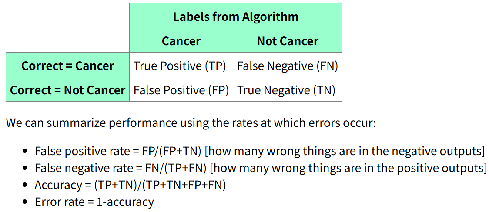
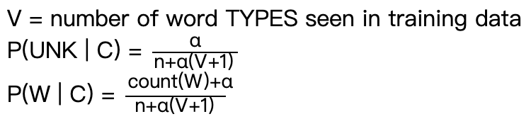
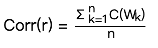

ECE448/CS440 Artificial Intelligence¶
约 2208 个字 3 张图片 预计阅读时间 7 分钟
CS 440 Artificial Intelligence
https://github.com/illinois-cs-coursework
https://courses.grainger.illinois.edu/cs440/fa2025/readings.html
[!IMPORTANT]
https://courses.grainger.illinois.edu/cs440/fa2025/lectures/probability-review.html
Introduction¶
https://courses.grainger.illinois.edu/cs440/fa2025/lectures/intro.html
Historical and other trivia¶
We've seen a lot of trivia, most of it not worth memorizing. The following items are the exceptions. Be able to explain (very briefly) what they are and (approximately) what time period they come from.
- McCulloch and Pitts
- Time Period: 1940s
- Contribution: They introduced the first mathematical model of a neural network. Their work was foundational, proposing that networks of simple computational units (neurons) could perform complex logical operations. These were theoretical models on paper, as the hardware to implement them didn't exist yet.
- Fred Jelinek
- Time Period: 1980s - 1990s
- Contribution: A key figure in speech recognition. He pioneered the use of statistical models, specifically n-gram language models and Hidden Markov Models (HMMs), which dramatically improved the accuracy and utility of speech recognition systems.
- Pantel and Lin (SpamCop)
- Time Period: Late 1990s
- Contribution: They were pioneers in using Naive Bayes classifiers for spam detection. Their work showed that this statistical approach was highly effective for classifying emails, forming the basis of many modern spam filters.
- 朴素贝叶斯垃圾邮件分类器
- Boulis and Ostendorf
- Time Period: Mid 2000s
- Contribution: They conducted research comparing the performance of Naive Bayes versus Support Vector Machine (SVM) classifiers for gender classification based on transcribed telephone conversations.
- A Quantitative Analysis of Lexical Differences Between Genders in Telephone Conversations, ACL 2005
- The Plato System
- Time Period: Started in the 1960s
- Contribution: An early and influential computer-assisted instruction system developed at the University of Illinois. It was a precursor to modern e-learning platforms and online communities.
- The Golem of Prague
- Time Period: 16th-century Jewish folklore
- Contribution: An early myth or story related to artificial intelligence. It tells of an artificial humanoid creature created from clay to protect the Jewish community. It represents an ancient human desire to create intelligent, autonomous beings.
Probability¶
https://courses.grainger.illinois.edu/cs440/fa2025/lectures/probability-review.html
Random variables, axioms of probability:
- A random variable is a variable whose value is a numerical outcome of a random phenomenon.
- The axioms of probability (Kolmogorov's axioms of probability 柯尔莫哥洛夫概率公理) are fundamental rules:
- The probability of any event is non-negative
- The probability of the entire sample space (a certain event) is 1
- The probability of the union of mutually exclusive events is the sum of their individual probabilities
$$ 0 ≤P(A)\ P(True) = 1\ P(A|B) = P(A) + P(B), \text{if A and B are mutually exclusive events} $$ - Joint, marginal, conditional probability: - Joint Probability P(A,B): The probability of two events occurring together - Marginal Probability P(A): The probability of a single event occurring, irrespective of other events. It can be calculated by summing the joint probabilities over all outcomes of the other variable: \(P(A)=∑_BP(A,B)\) - Conditional Probability P(A∣B): The probability of event A occurring given that event B has already occurred. It is calculated as \(P(A | B) = \frac{P(A,B)}{P(B)}\)

Modelling Text Data¶
- Word types vs. word tokens:
- Tokens: The total number of words in a document (e.g., "the cat sat on the mat" has 6 tokens). 单词总数
- Tokenization 标记化，定义单词得到 a clean string of words
- divide at whitespace 在空白处划分
- normalize punctuation, html tags, capitalization, etc 规范标点符号、html 标签、大写字母等
- perhaps use a stemmer to remove word endings 使用词干分析器来删除单词结尾
- Types: The number of unique words in a document (e.g., "the cat sat on the mat" has 5 types: "the", "cat", "sat", "on", "mat"). 词典条目，唯一的单词数
- The Bag of Words model: A bag-of-words model determines the class of a document based on the frequency of occurrence of each word. It ignores the order in which words occur, which ones occur together, etc. So it will miss some details, e.g. the difference between "poisonous" and "not poisonous." 忽略语法甚至词序但保持多样性
- Bigrams, ngrams:
- N-grams are contiguous sequences of n items (e.g., words, letters) from a given sample of text.
- N-gram 是来自给定文本样本的 n 个项目（例如单词、字母）的连续序列。
- A bigram is a specific n-gram where n=2 (a two-word sequence). For example, in "the cat sat", the bigrams are "the cat" and "cat sat".
- 特定的 n-gram，其中 n=2（即两个单词的序列）。例如，在“the cat sat”中，二元语法是“the cat”和“cat sat”。
- N-grams are contiguous sequences of n items (e.g., words, letters) from a given sample of text.
- Data cleaning:
- Tokenization: The process of splitting a stream of text into words, phrases, symbols, or other meaningful elements called tokens.
- 标记化： 将文本流拆分为单词、短语、符号或其他有意义的元素（称为标记）的过程。
- Stemming 分词: The process of reducing inflected (or sometimes derived) words to their word stem, base or root form. Julie Lovins (1968) created one of the first stemming algorithms, and Martin Porter (1980) developed the Porter Stemmer, which is one of the most widely used.
- 词干提取： 将词形变化的词简化为词干、基词或词根形式的过程。Julie Lovins （1968 年）创建了最早的词干提取算法之一， Martin Porter （1980 年）开发了 Porter 词干提取器，它是目前使用最广泛的算法之一。
- Making units of useful size: This involves either breaking long words into smaller pieces (common in languages like German) or grouping characters into words (necessary for languages without spaces, like Chinese).
- 将长单词分成更小的部分，特别是中文（没有空格）
- Tokenization: The process of splitting a stream of text into words, phrases, symbols, or other meaningful elements called tokens.
- Special types of words:
- Stop words: Very common words (e.g., "the", "a", "is") that are often removed before processing because they carry little semantic weight.
- 非常常见的词：function words, fillers, backchannel
- Rare words: Words that appear very infrequently. They can be problematic for statistical models and are sometimes removed or replaced with a generic "UNK" (unknown) token.
- 生僻词：出现频率极低的词，删除一部分或都用UNK标记（视为一个单独的项目）
- Hapax legomena: Words that occur only once in a corpus. They are an extreme case of rare words.
- 罕见词的极端情况，只出现一次
- Filler: Words or sounds used to pause in a conversation (e.g., "um," "uh," "like").
- 填充词
- Backchannel: Signals from a listener that indicate they are paying attention (e.g., "uh-huh," "yeah," "I see").
- 听众发出的信号词
- Function vs. content words: Content words (nouns, main verbs, adjectives) carry the primary meaning. Function words (prepositions, articles, conjunctions) provide grammatical structure.
- 实词 （名词、主要动词、形容词）承载主要含义， 功能词 （介词、冠词、连词）提供语法结构
- Stop words: Very common words (e.g., "the", "a", "is") that are often removed before processing because they carry little semantic weight.
Testing¶
-
Roles of training, development, test datasets:
- Training set: The data used to train the model and learn its parameters.
- Development set (or validation set): The data used to tune the model's hyperparameters and make design choices. It helps prevent overfitting to the training set.
- Test set: The data held back until the very end to provide an unbiased, final evaluation of the model's performance.
-
Evaluation metrics for classification:
Confusion Matrix 混淆矩阵 Labels from Algorithm / happen Not happen Correct = happen True Positive (TP) False Negative (FN) Correct = not happen False Positive (FP) True Negative (TN) - False positive rate = \(FP/(FP+TN)\) [how many wrong things are in the negative outputs]
- False negative rate = \(FN/(TP+FN)\) [how many wrong things are in the positive outputs]
- Accuracy = \((TP+TN)/(TP+TN+FP+FN)\)
- The fraction of predictions the model got righ
- Error rate = \(1-accuracy\)
- precision (p) = \(TP/(TP+FP)\) [how many of our outputs were correct?]
- recall ® = \(TP/(TP+FN)\)
- True Positive [how many of the correct answers did we find?]
-
F1 = \(2pr/(p+r)\)
- F1 is the harmonic mean of precision and recall. Both recall and precision need to be good to get a high F1 value.
-
Confusion Matrix: A table that visualizes the performance of a classifier, showing the counts of true positives, true negatives, false positives, and false negatives.
Naive Bayes¶
https://courses.grainger.illinois.edu/cs440/fa2025/lectures/bayes.html
Basic definitions and mathematical model¶
-
P(A | C) is the probability of A in a context where C is true
- Definition of conditional probability: \(P(A | C) = \frac{P(A,C)}{P(C)}\)
- \(P(A)=∑P(A|Z) p(Z,\theta)\)
- \(P(A,C) = P(A) \times P(C | A) = P(C,A)=P(C) \times P(A | C)\)
- Bayes Rule: \(P(C|A)=\frac{P(A|C)\times P(C)}{P(A)}\)
- \(P(cause|evidence)=\frac{P(evidence|cause)P(cause)}{P(evidence)}\)
- posterior likelihood prior normalization
- Definition of conditional probability: \(P(A | C) = \frac{P(A,C)}{P(C)}\)
-
Likelihood: P(evidence∣cause) 概率
- Prior: P(cause) 先验
- Posterior: P(cause∣evidence) 后验
- argmax operator: Returns the input value that maximizes a function. In classification, we use it to find the class with the highest posterior probability.
- 表示返回使函数最大化的输入值的符号，用来找到后验概率最高的类
- Independence vs. Conditional Independence: Naive Bayes makes a "naive" assumption of conditional independence of features: features are independent of each other given the class. This is a stronger assumption than simple independence.
- Independence
- Two events A and B are independent iff \(P(A,B) = P(A) \times P(B)\)
- Conditional Independence
- 定义：\(P(A, B | C) = P(A|C) \times P(B|C)\), 等价于 \(P(A | B) = P(A), P(B | A) = P(B)\)
- 独立性很少成立；条件独立性是在特定的上下文中，两个变量是否独立，近似合理。
- Independence
- MAP vs. ML estimate
- Maximum Likelihood (ML) chooses the parameters that maximize the likelihood of the data.
- Maximum a Posteriori (MAP) incorporates a prior probability, choosing parameters that maximize the posterior probability. The prior acts as a regularizer.
- Combining evidence: Under the conditional independence assumption, the likelihood of all evidence is simply the product of the likelihoods of each individual piece of evidence:
- \(P(evidence_1,…,evidencen∣cause)=∏_iP(evidence_i∣cause)\).
- Model size: Naive Bayes dramatically reduces the number of parameters needed compared to a full joint distribution table, making it computationally feasible and less prone to overfitting on small datasets.
Applying Naive Bayes to text classification¶
-
Estimation equations: You estimate the prior probability of a class by its frequency in the training data, and the likelihood of a word given a class by its frequency within documents of that class.
- 估计方程，通过训练数据中某个类别的频率来估计该类别的先验概率
-
Avoiding underflow: Since you are multiplying many small probabilities, the result can become too small for a computer to store (underflow). To fix this, you work with the sum of log probabilities instead: \(log(A⋅B)=log(A)+log(B)\).
- 对数防止乘以太小的数字影响准确性（计算精度），将朴素贝叶斯算法最大化
-
Avoiding overfitting (Smoothing):
-
Why it's important: If a word never appears in the training data for a certain class, its probability will be zero, causing the entire posterior probability for that class to become zero. 过度拟合，0会破坏朴素贝叶斯算法
-
Laplace smoothing: Adds a small constant (usually 1) to every count, ensuring no probability is ever zero.
-
拉普拉斯平滑：

-
\(n\) = number of words in our Class C training data \(count(W)\) = number of times W appeared in Class C training data
\(\alpha\): a constant positive number \(V\) = number of word types seen in training data
-
-
Deleted estimation 删除估计: A cross-validation technique used to find optimal smoothing parameters.

, W1,...,Wn 是在数据集前半部分出现 r 次的单词- 删除估计已被证明比拉普拉斯平滑更准确
-
N-gram smoothing: Refers to more advanced techniques (like Good-Turing, Kneser-Ney) used for n-gram models to handle unseen n-grams by redistributing probability mass from seen n-grams. The high-level idea is to "borrow" probability from more frequent events to assign to rare or unseen events.
-
Readings¶
Quiz 1¶
An algorithm for suffix stripping 后缀剥离
- current program: small, fast, simple
- Goals: improve IR performance
- Challenges: success rate significantly less than 100%
- 5 steps to reduce the vocabulary by ⅓
The Psychological Functions of Function Words
评论区~
有用的话请给我个赞和 star =>